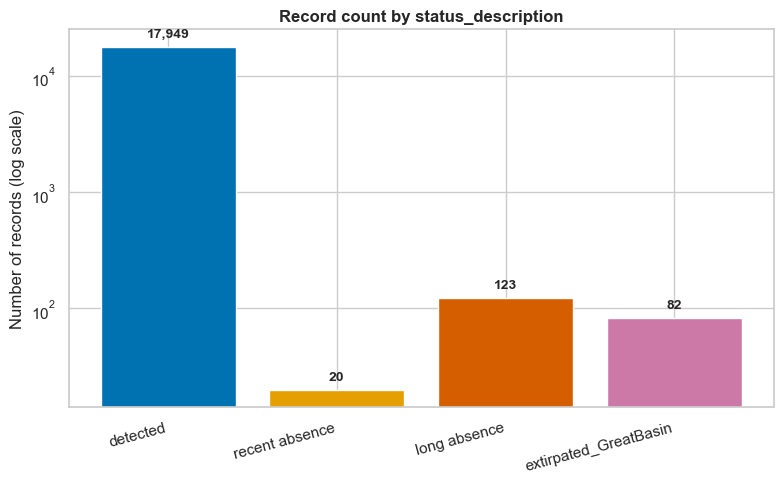
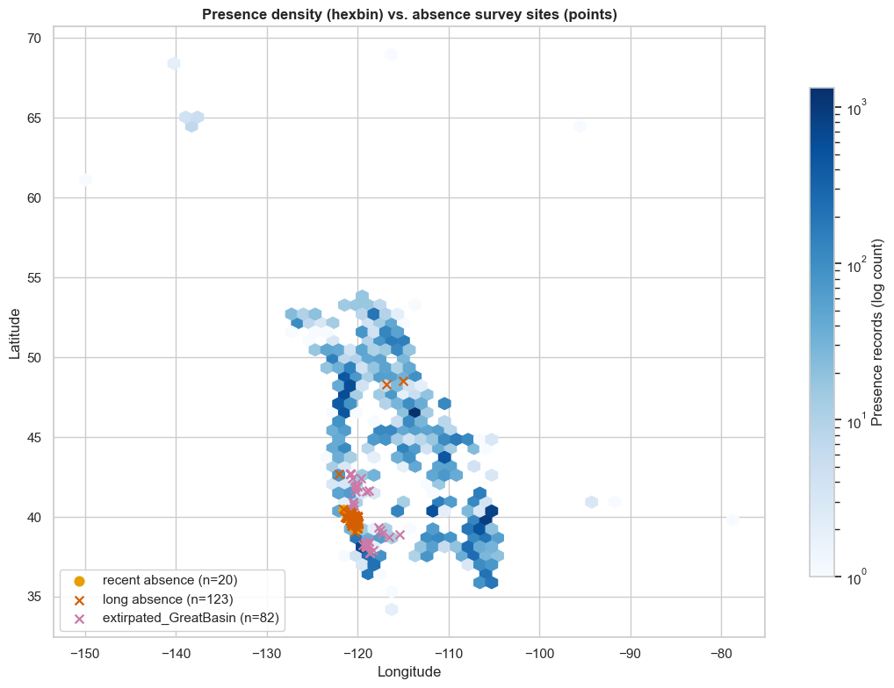
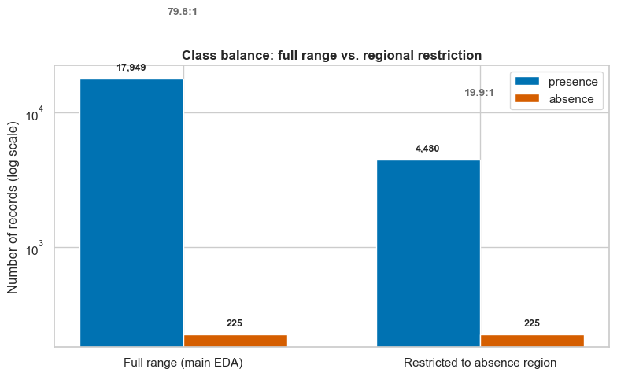
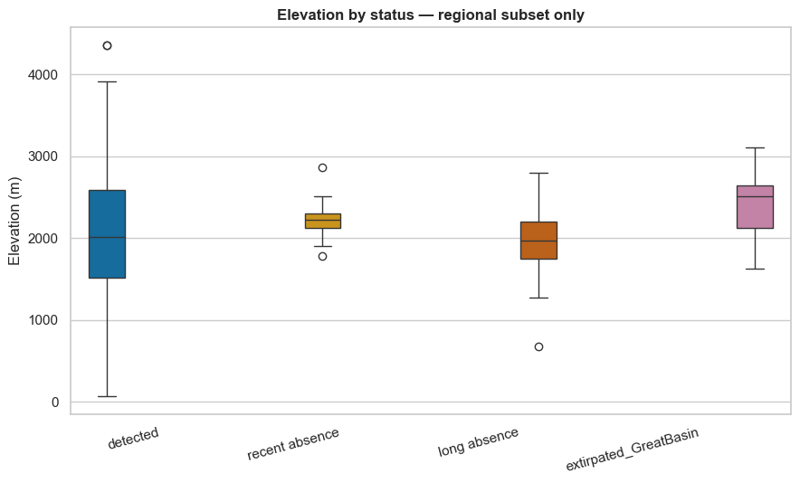
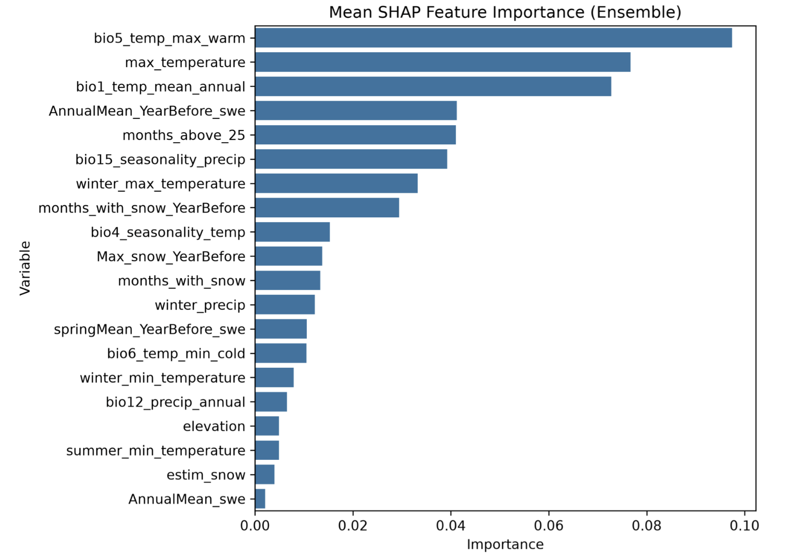

Ochotona princeps survives on a knife-edge of temperature. This is the data behind its disappearing mountain habitat — and a model built to help track it.
High in the talus fields of the western mountains lives an animal that never sleeps through winter and cannot survive a hot afternoon.
The American pika (Ochotona princeps) is a small, round-bodied relative of rabbits and hares, though it belongs to its own family, Ochotonidae. Adults measure roughly 16–22 cm long and weigh between 120 and 180 g — small enough to disappear into a gap between two boulders, which is exactly where it spends most of its life.
Pikas are unusual among small mammals in two ways: they are active by day, all year round, and they never hibernate. Instead of sleeping through winter, a pika survives on a haypile — a cache of grasses and wildflowers it spends the entire summer clipping, sun-drying, and stacking under the rocks. Each pika defends its own territory with a sharp, whistling alarm call, often the first sign of a colony long before any animal is seen.
That same lifestyle makes the pika one of the most closely watched indicator species in North American climate science. It cannot dig a burrow to escape the heat, and it cannot easily walk to a cooler mountain range. What it can do is retreat deeper into the talus — and when even that isn't enough, disappear from a site entirely.
How a Warming Climate Reaches the Talus
The American pika’s (Ochotona princeps) specialized biology leaves almost no margin for error in a warming world. Four primary climatic pressures—combined with restricted dispersal capabilities—explain why researchers treat this alpine specialist as a critical indicator species for climate impacts (IPCC, 2023; Beever et al., 2011).
Extreme Heat Sensitivity
Pikas possess high metabolic rates and dense, insulating fur that allow them to survive harsh alpine winters, but make them exceptionally vulnerable to overheating. Studies show that prolonged exposure to temperatures above 25–28°C causes severe physiological stress and can prove fatal (Beever et al., 2011). On hot summer afternoons, pikas are forced to cease surface activity and retreat into cool rock crevices, drastically reducing the time available for summer foraging and haypile building.
Shrinking Habitat, Fewer Places to Go
As regional warming progresses, suitable environmental conditions shift toward higher elevations. Because pikas exhibit strong territorial behavior and limited dispersal ability, moving between isolated mountain patches is difficult. As lower-elevation populations disappear, remaining groups are pushed toward mountain summits where no further range expansion is possible—a phenomenon known as the "escalator to extinction" (Beever et al., 2011).
Vanishing Snowpack
Winter snowpack acts as an essential thermal insulating layer over talus habitats, protecting pikas from extreme sub-zero cold while they remain active underground. As warming alters winter precipitation patterns and delays snow accumulation, pikas face a severe paradox: warmer regional temperatures that leave them increasingly exposed to lethal winter cold events.
Drought and Disappearing Forage
Unlike many alpine mammals, pikas do not hibernate. Their year-round survival depends on haying—collecting grasses, wildflowers, sedges, and shrubs during the brief summer to store in large "haypiles" beneath rocks (Smith & Weston, 1990). Increased frequency of severe droughts, reduced plant productivity, and altered timing of snowmelt threaten both the quality and availability of these critical food caches.
Talus slopes contain subsurface rock networks that naturally circulate air, maintaining cooler, stable microclimates compared to ambient surface air (Millar & Westfall, 2010). While these microrefugia provide temporary shelter during peak heat hours, they cannot fully offset long-term regional warming or continued habitat loss. As warming intensifies, the protective capacity of talus habitats will continue to diminish.
The SDG Challenge
The American pika's crisis is a small, sharply-focused case study of two of the United Nations' 17 Sustainable Development Goals.
SDG 13
Climate Action
Calls for urgent action to combat climate change and its impacts — exactly the mechanism described above: rising heat, vanishing snowpack, and deepening drought.
SDG 15
Life on Land
Target 15.4 specifically calls for conserving mountain ecosystems and their biodiversity; Target 15.5 calls for urgent action to halt biodiversity loss and prevent the extinction of threatened species.
A cold-adapted mountain specialist with nowhere higher to climb is precisely the kind of species these targets exist to protect — and precisely the kind of species that benefits from a monitoring tool like the one this project builds.
02 · Research Questions
Research Questions
Before writing any code, a project like this needs a clear question to answer. PikaWatch is organized around four — each a different flavor of the same underlying problem.
Classification
Can we classify whether a given site is likely to have a present pika population, based on its climate, terrain, and drought conditions?
Explanation
Which environmental variables best distinguish presence from absence — and does the answer change once regional sampling bias is accounted for?
Forecasting
Can we forecast how a site's predicted suitability might shift under a specified future year's climate conditions?
Optimization
Can model predictions help prioritize limited conservation and field-survey resources toward the sites most likely to serve as climate refugia?
03 · Methodology
How the Model Was Built
The proposed data product is an interactive web-based platform designed to transform complex species distribution modelling into an accessible, data-driven resource for climate education, environmental awareness, and conservation planning. By bridging the gap between advanced ecological data science and public understanding, the platform replaces traditional, static scientific reports with dynamic, interactive maps that allow users to explore current American pika (Ochotona princeps) habitat suitability and compare projected distributions under multiple future climate scenarios. A key differentiator of the platform lies in its integration of machine learning–based predictive models with diverse spatial datasets—including climate variables, topographic features, vegetation indices, and drought indicators—within an interactive geographic information system. Grounded in a rigorous scientific foundation, the platform utilizes documented species occurrence data, peer-reviewed modelling methodologies (Elith & Leathwick, 2009), and IPCC climate projections (IPCC, 2023) supported by established ecological research on pika climate sensitivity (Beever et al., 2011; Millar & Westfall, 2010). Ultimately, this solution provides students, educators, researchers, conservation practitioners, and policymakers with a credible, engaging tool that demonstrates the practical application of data science to real-world environmental challenges while fostering informed discussions around mountain ecosystem protection.
Data Collection
Species distribution models are only as good as the data behind them. This project compiles a comprehensive occurrence dataset for the American pika — with particular emphasis on reliable absence records, not just presence — and pairs every record with matching topographic and climatic information for the same place and year.
Occurrence Records
Each record pairs geographic coordinates and a year of observation with a species status of 1 (presence) or 0 (absence). Absence means a site with a documented historical pika record that was resurveyed and found unoccupied — a stronger signal than a simple "no sightings" location.
Long-Term Climate (WorldClim v2.1)
Bioclimatic normals averaged over 1970–2000 — BIO1, BIO4, BIO5, BIO6, BIO12, BIO15 — describing each location's long-term climatic niche. Since these are multi-decade averages, only the coordinates were needed to retrieve them.
Topography
Elevation and slope, derived directly from digital elevation data. Pikas are cold-adapted alpine specialists tied to steep, talus-strewn terrain, so both variables describe the physical structure of suitable habitat.
Interannual Climate (TerraClimate)
Monthly climate data, matched to each record's specific observation year and aggregated into ecologically meaningful indicators — snow water equivalent, snow duration, and seasonal temperature extremes — for that year and the year before.
Drought Indices (TerraClimate)
Palmer Drought Severity Index (PDSI) summaries — annual, summer, and winter means, plus a "worst month" value — computed for the observation year and lagged one year to capture delayed effects on forage.
Exploratory Data Analysis (EDA)
This section draws on two related analyses: a full exploratory analysis of every available presence and absence record, and a follow-up study that restricts the presence data to the same geographic window as the absence surveys, to test whether the patterns found in the first analysis hold up once that mismatch is controlled for.
The Data at a Glance
The original combined dataset (before any data cleaning process) contains 17,949 presence records and 225 absence records, the latter categorized into recent absence, long absence, and locally extinct ("extirpated") sites within the Great Basin. This represents a presence-to-absence ratio of approximately 80:1. Due to this magnitude of imbalance, a logarithmic scale is used in the chart below to display both categories clearly.

Figure: record count by status, log scale — detected 17,949 · recent absence 20 · long absence 123 · extirpated 82.
Log scale — presence : absence ratio = 79.8 : 1.
The Geographic Confound
Spatial distribution varies significantly between observation types. Presence records cover a wide latitudinal range from approximately 34°N to 69°N across the American pika range. In contrast, absence records are geographically restricted to a specific corridor between roughly 37.7°N and 48.5°N, encompassing the Sierra Nevada, Great Basin, and northern Rockies regions. Evaluating presence and absence across the entire dataset without controlling for this geographic asymmetry may introduce spatial confounding between local ecological factors and broader regional climate differences.

Figure: latitude range — presence 34.2°–69.0°N vs. absence 37.7°–48.5°N.
Comparing the Full Dataset and a Regional Subset
To test that confound directly, a second analysis restricts the presence data to the exact geographic bounding box covered by the absence surveys — no buffer, no invented parameters. This keeps 4,480 of the 17,949 presence records (25%) and improves the class-imbalance ratio from 79.8:1 down to 19.9:1, at the cost of discarding most of the presence data.

Figure: presence/absence counts, full range vs. regional subset (79.8:1 → 19.9:1).
Restricting to the absence region roughly quarters the imbalance ratio — at the cost of three-quarters of the presence data.
Elevation: the Headline Reversal
Across the full dataset, detected sites had the highest median elevation of all four status groups (≈ 2,438 m) — elevation looked like a clean, strong predictor. Restricted to the absence region alone, that flips: detected sites drop to the lowest-or-tied-lowest median (≈ 2,012 m), while extirpated sites remain the highest (≈ 2,516 m). The historical resurvey sites were deliberately chosen at high-elevation, well-documented habitat — so within this specific region, being "detected" nearby is not the same as being at the highest elevation. Elevation's apparent importance in a range-wide model may partly reflect which broad region a point falls in, rather than how suitable that specific elevation is.

Figure: median elevation by status, global vs. regional — detected goes from highest to lowest.
Pre-processing: Features & Preparation
Before modelling, the geographic coordinates and year of observation were dropped from the predictor set. Both were essential for retrieving the right environmental data in the first place, but leaving them in as predictors risked letting the model memorize where and when pikas were recorded, rather than learn the environmental conditions that actually determine habitat suitability.
From 35 Candidate Variables…
An initial set of 35 environmental predictors was assembled from the literature on species distribution modelling and pika ecology: WorldClim's long-term bioclimatic normals used as-is, plus topographic variables and TerraClimate's monthly data aggregated into seasonal temperature extremes, drought severity, and snow-related metrics — several with one-year-lagged versions to capture carry-over effects on forage and snowpack.
…to 20, via SHAP
Because climate variables are inherently correlated, the goal wasn't to strip out correlation itself, but to find predictors that were both highly correlated and added little beyond what other variables already captured. The model was first trained on all 35 predictors, then a SHAP (SHapley Additive exPlanations) analysis ranked each one by its average contribution to predictions. Low-importance variables flagged by SHAP were cross-checked against their Spearman correlation with stronger predictors and removed iteratively — trimming the set from 35 to 20 variables with no loss in predictive performance.
Temperature dominates the result: the maximum temperature of the warmest month (BIO5), the observation year's maximum temperature, and annual mean temperature (BIO1) are the three strongest predictors — consistent with the pika's well-documented sensitivity to heat. Snowpack metrics, such as snow water equivalent and months with snow, form an important secondary group. Elevation's individual contribution turns out to be small once climate is accounted for, since its effect on suitability is largely mediated through climate rather than independent.

Figure: SHAP feature importance for the final 20 predictors — temperature variables dominate, with snow water equivalent and precipitation seasonality as secondary drivers.
Why the Top Three Survive Despite Being Correlated
The correlation-based pruning step was only ever applied to low-importance variables flagged by SHAP — never to the top-ranked predictors, so bio5_temp_max_warm, max_temperature, and bio1_temp_mean_annual were never candidates for removal on correlation grounds alone. They're also not fully redundant: each captures a different temporal slice of the same underlying heat signal. BIO5 is the long-term (1970–2000) climatological normal for the warmest month; max_temperature is the actual maximum recorded in that specific observation year, capturing how far that year departed from the baseline; BIO1 is the long-term annual mean, reflecting overall thermal regime rather than a summer spike alone. A site can have a high BIO5 baseline but a mild max_temperature in a given year, or the reverse — and those are exactly the cases where keeping all three gives the model information a single temperature variable would miss.
Final Feature Set (20 variables)
Variable
Description
Topography
elevation
Shapes temperature, snow persistence, vegetation, and oxygen availability; pikas are predominantly a high-elevation, alpine species.
Temperature
bio5_temp_max_warm
Average maximum temperature of the warmest month (WorldClim BIO5) — the single strongest predictor, since extreme summer heat is a major limiting factor for pikas.
max_temperature
Maximum temperature recorded during the observation year — annual heat extremes.
bio1_temp_mean_annual
Average temperature across the year (WorldClim BIO1) — overall thermal conditions.
months_above_25
Count of months exceeding 25°C — frequency of potentially stressful heat conditions.
winter_max_temperature
Warmest point typically reached in winter — unusually warm winters can reduce snow persistence.
bio4_seasonality_temp
Variability through the year (WorldClim BIO4), linked to snow cover duration and growing-season length.
bio6_temp_min_cold
Average minimum temperature of the coldest month (WorldClim BIO6) — a proxy for winter extremes and the insulating role of snow.
winter_min_temperature
Winter minimum temperature during the observation year — the harshest conditions experienced that winter.
summer_min_temperature
Coolest point typically reached in summer — cool nighttime conditions during the growing season.
Precipitation & Snow
bio15_seasonality_precip
How evenly precipitation is distributed through the year (WorldClim BIO15), shaping plant growth and snow accumulation.
bio12_precip_annual
Total precipitation across the year (WorldClim BIO12), reflecting overall water availability for vegetation.
winter_precip
Total winter precipitation — a key input to snowpack formation.
months_with_snow
Number of months with snow cover during the observation year — duration of winter insulation.
months_with_snow_YearBefore
Months with snow cover in the previous year — a lagged version of the same effect.
estim_snow
Approximate total snow accumulation — insulates the talus in winter and feeds water availability after melt.
Snow Water Equivalent (SWE)
AnnualMean_swe
Average water stored in the snowpack across the observation year.
AnnualMean_YearBefore_swe
Annual mean SWE, previous year — carry-over snowpack effects on vegetation and hydrology.
Max_snow_YearBefore
Maximum SWE, previous year — the prior year's peak snow depth.
springMean_YearBefore_swe
Spring mean SWE, previous year — lagged snowmelt-timing effects on forage availability.
The cleaned dataset's 14,393 presence and 187 absence records form a heavily imbalanced base for training — handled next, in the model-building step, through balanced resampling and an ensemble approach.
Building the Model
Three tree-based ensemble classifiers were trained and compared on the final 20-feature set: Random Forest (RF), XGBoost, and LightGBM. All three handle non-linear relationships and correlated climate variables gracefully, need little preprocessing, and report which features mattered most to their own predictions — well suited to a predictor set dominated by intercorrelated bioclimatic variables.
Because presence records (14,393) vastly outnumber absence records (187) — roughly 77:1 — training used balanced resampling rather than the full imbalanced set: each iteration draws a random subset of about 200–225 presence records and pairs it with the available absence records, then randomly withholds 20% of that balanced subset for testing. Hyperparameters for each algorithm were tuned via cross-validation before the ensemble step below.
1
Balance the Classes
With presence outnumbering absence roughly 77:1, each iteration draws a random subset of ~200–225 presence records and pairs it with the available absence records, rather than training on the full imbalanced set.
2
Hold Out a Test Set
20% of each balanced subset is randomly withheld for testing, with the remaining 80% used for training — redrawn fresh for every ensemble iteration.
3
Tune Hyperparameters
For each of the three algorithms — RF, XGBoost, LightGBM — hyperparameters are optimized via cross-validation to maximize performance while limiting overfitting.
4
Build a 100-Model Ensemble
For each algorithm, 100 models are trained, each on a freshly resampled ~200-presence-record subset. Their predicted probabilities are averaged, and a site is classified as suitable when that average is ≥ 0.5.
5
Select the Final Model
The three ensembles are compared on independent test data; Random Forest yields the highest overall accuracy and is retained as the final habitat suitability model.
Evaluation
With a trained model in hand, its performance is measured against an independent testing set it never saw during training — 20% of the balanced dataset, withheld before any training took place. Of the three algorithms compared, the Random Forest ensemble produced the highest overall accuracy and was selected as the final habitat suitability model.
These figures come from the Random Forest ensemble at the default 0.5 probability threshold. Because only 187 absence records were available — and nearly all were needed for training — the independent test set contained just 38 absence observations, so the absence-side metrics below should be read with that small sample size in mind.
0.999
ROC-AUC
Area under the ROC curve. 0.5 is random; 1.0 is perfect discrimination between presence and absence.
0.99
Balanced Accuracy
Average of presence and absence recall — keeps the rare absence class from being swamped by the much larger presence class.
98%
Overall Accuracy
2,860 of 2,917 independent test observations classified correctly.
98%
Presence Recall
Share of true presence sites correctly identified — 2,822 of 2,879, with 57 missed (false negatives).
40%
Absence Precision
Of sites predicted absent, share truly absent. Low mainly because absence is so rare in the test set (38 of 2,917) — specificity is 100%, with zero false positives.
At the default 0.5 threshold, the model made zero false-positive predictions: every site it flagged as suitable habitat was a confirmed pika presence, at the cost of missing 57 true presence sites. Lowering the threshold to about 0.4 reduces those missed detections and raises absence precision to roughly 70% — trading some of that conservatism for more complete presence detection. Which threshold is "right" depends on whether the priority is a conservative estimate of suitable habitat or a more complete one.
Confusion Matrix — Random Forest Ensemble, Independent Test Set
Predicted Presence
Predicted Absence
Actual Presence
2,822 (TP)
57 (FN)
Actual Absence
0 (FP)
38 (TN)
The absence data is scarce and geographically clustered — concentrated within a limited number of resurvey sites — so this evaluation doesn't fully test how the model generalizes to unsampled parts of the pika's range. A follow-up check split the test set into 15 spatial clusters and found consistent PR-AUC across them, with no evidence of major regional variation — but only within regions already represented in the training data. Applying the model outside those surveyed regions would be an extrapolation beyond what has actually been validated.
04 · Try It
Test the Prediction Model
This tool puts the research questions above into practice. Pick a place on the map — or type coordinates directly — describe its climate, terrain, snow, and drought conditions, and the model estimates whether an American pika could survive there.
1
Climate & Site Data
Temperature, precipitation, snow, drought, slope, and location for a place and year.
2
Classification Model
A trained classifier weighs each variable against patterns learned from real occurrence records.
3
Presence / Absence
A prediction, with a confidence score, for whether the site is likely pika habitat.
You've seen how the model behind PikaWatch was built and evaluated — now try it yourself. Select a site on the map, or enter coordinates directly, then fill in the climate and terrain conditions and run the model.
Demo logic only. This interface runs a simplified rule-of-thumb function to demonstrate the workflow, not the trained model described above. See the code comments in index.html for how to connect a real classifier's API once it's ready.
Click anywhere on the map to drop a pin
Selected location:none yet
Select a site on the map, complete the variables, then run the model to see a prediction here.
05 · References
References
Beever, E. A., Ray, C., Wilkening, J. L., Brussard, P. F., & Mote, P. W.(2011).Contemporary climate change alters the pace and drivers of extinction.Global Change Biology, 17(6), 2054–2070.
Elith, J., & Leathwick, J. R.(2009).Species distribution models: Ecological explanation and prediction across space and time.Annual Review of Ecology, Evolution, and Systematics, 40(1), 677–697.
IPCC.(2023).Climate Change 2023: Synthesis Report. Contribution of Working Groups I, II and III to the Sixth Assessment Report of the Intergovernmental Panel on Climate Change[Core Writing Team, H. Lee and J. Romero (eds.)]. IPCC, Geneva, Switzerland.
Millar, C. I., & Westfall, R. D.(2010).Distribution and climatic relationships of the American pika (Ochotona princeps) in the Sierra Nevada and Western Great Basin, USA; periglacial landforms as refugia in warming climates.Arctic, Antarctic, and Alpine Research, 42(1), 76–88.
Qin, Y., Abatzoglou, J. T., Siebert, S., Huning, L. S., AghaKouchak, A., Mankin, J. S., Hong, C., Tong, D., Davis, S. J., & Mueller, N. D.(2020).Agricultural risks from changing snowmelt.Nature Climate Change, 10(5), 459–465.
Smith, A. T., & Weston, M. L.(1990).Ochotona princeps.Mammalian Species, (352), 1–8.